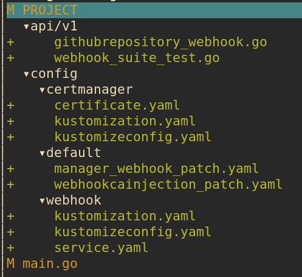
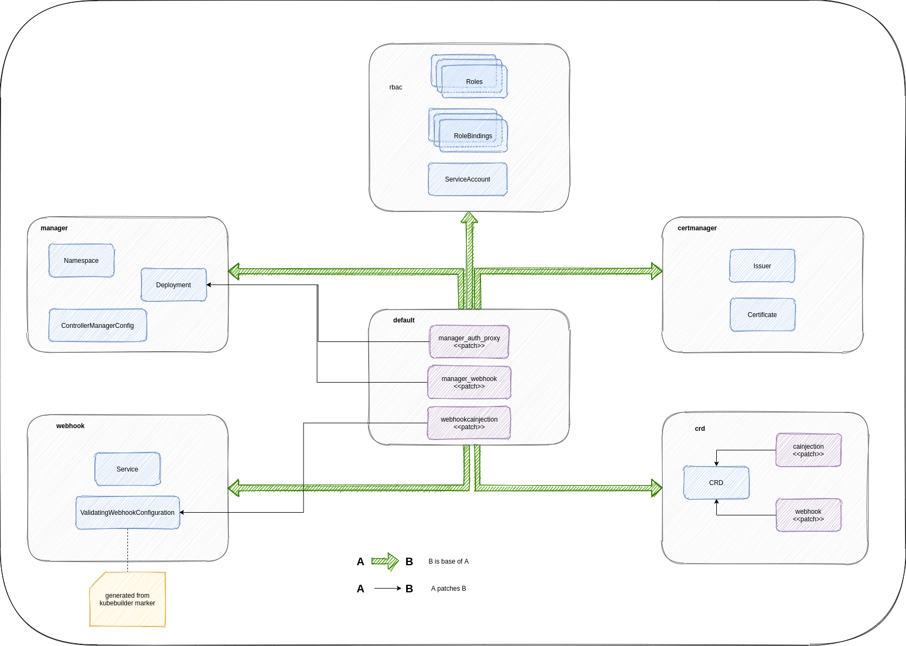

So far we have ignored most of the validation of custom resource when implementing the operator in the previous 3 posts. That’s the topic of today post
Posts in the series
- Scaffold and first slice of the operator: creation of github repository
- Update and delete of github repository
- Creating of github repository by cloning another repository
- Validation using webhooks (this post)
Types of validation
Operator SDK supports both OpenAPIv3 validation and webhook validation. We are going to add both of them to our operator:
- OpenAPI validation:
ownerandrepofields are required
- Webhook validation:
templateOwnerandtemplateRepomust not be the same withownerandrepotemplateOwnerandtemplateRepoif present must refer to an existing repo in github that is marked as template repository
Add OpenAPI validation
We can use OpenAPI schema to validate a few simple things like whether a field is required, whether it’s in correct format, etc. In our case, both owner and repo are string and are already required by default, but users still can pass in empty string, which we should be able to catch easily.
The test (I put in controllers/suite_test.go because this relies on Kubernetes API server to perform the validation, so we need all the setup in end to end test):
|
|
To fix this test, just need to add kubebuilder marker in GithubRepositorySpec Owner and Repo fields:
|
|
Run make manifest to re-generate CRD and run the tests again to see it pass.
Scaffold validating webhook
Operator sdk supports scaffolding several types of webhook:
- validating webhook: to perform validation that we cannot do with OpenAPI validation, created by
--programmatic-validationflag - mutating/defaulting webhook: to set default values for fields or mutate objects for other purposes, created by
--defaultingflag - conversion webhook: to convert from one version of CRD to another, created by
--conversionflag
In our case, we just need validating webhook. To scaffold it, run the following command:
|
|
Here are the files generated by above command:

config:certmanager: kustomize files to configure CertManager. CertManager is used to automate generation of certificate for our webhook.webhook: kustomize files forValidatingWebhookConfigurationand webhook kubernetes servicedefault:manager_webhook_patch.yaml: add volume and volume mount for webhook cert tocontroller-managerdeployment.webhookcainjection_patch.yaml: setup annotation for CertManager to inject CA cert intoValidatingWebhookConfiguration. This CA cert is used by API server to verify TLS connection with webhook.
api/v1/githubrepository_webhook.go: webhook codemain.go: the code generation also modifiesmain.goto include the following code to setup webhook with manager:
|
|
Run make manifests will create an additional file config/webhook/manifests.yaml: this is ValidatingWebhookConfiguration generated from +kubebuilder:webhook marker in api/v1/githubrepository_webhook.go.
Before we can test those new files, we need to uncomment all lines with [WEBHOOK] or CERTMANAGER in config/crd/kustomization.yaml and config/default/kustomization.yaml
To be honest, all those kustomize configs can be quite confusing, so I draw this diagram to illustrate relationship between different directories under config:

Basically default is the top most kustomize overlay and is the main one that we need to interact with. It uses other directories like crd, webhook, certmanager, rbac, manager as bases and provides patches to patch resources from those bases.
Run generated validating webhook
Run outside of Kubernetes cluster
Webhook requires a TLS cert at ${TMPDIR}/k8s-webhook-server/serving-certs/{tls.[crt|key]} when starting up. When webhook is deployed to a Kubernetes cluster, this will be provided by CertManager. To run webhook outside of cluster, we can generate the cert ourselves by using following make task:
|
|
Run the following commands:
|
|
You should see a log like serving webhook server {"host": "", "port": 9443} in the terminal
Since the webhook is running outside of Kubernetes cluster, Kubernetes API server is not aware of this webhook and will not invoke it when a new CR is created/updated. It’s just a http server so we can interact with it through curl like following script:
|
|
This script by default invokes validating webhook endpoint with payload from the file admission-review-request.json:
|
|
When invoking this script, you should see following logs in the first terminal, indicating the webhook was processing the request:
2021-08-15T13:03:21.277+1000 DEBUG controller-runtime.webhook.webhooks received request {"webhook": "/validate-github-pnguyen-io-v1-githubrepository", "UID": "705ab4f5-6393-11e8-b7cc-42010a800002", "kind": "github.pnguyen.io/v1, Kind=GithubRepository", "resource": {"group":"github.pnguyen.io","version":"v1","resource":""}}
2021-08-15T13:03:21.278+1000 INFO githubrepository-resource validate update {"name": "githubrepository-sample"}
2021-08-15T13:03:21.278+1000 DEBUG controller-runtime.webhook.webhooks wrote response {"webhook": "/validate-github-pnguyen-io-v1-githubrepository", "code": 200, "reason": "", "UID": "705ab4f5-6393-11e8-b7cc-42010a800002", "allowed": true}
Run inside Kubernetes cluster
Previous method can be used for quick validation during development. Once we are done with webhook implementation, we can deploy webhook to a Kubernetes cluster and test it out.
First install CertManager:
|
|
Then run following commands:
|
|
Once everything’s done, a new namespace github-repository-operator-system is created. You will see our controller is deployed as deployment there.
Now let’s create a custom resource:
|
|
You should see similar logs like above when inspecting controller pod log
First webhook validation
Our first validation is to ensure that templateOwner and templateRepo fields are not the same with owner and repo fields. Add following end to end test:
|
|
Add following implementation in ValidateCreate():
|
|
The test should pass now. Note that we just need to implement validation during creation of CR because template owner/repo are only used in the first time creation. They will be ignored in update requests.
Second webhook validation
The 2nd validation is more complicated: templateOwner and templateRepo if present must refer to an existing repo in github that is marked as template repository
In order to validate this, we need to invoke github api in our webhook to check whether the given templateOwner/templateRepo satisfy above requirement.
Let’s add 2 end to end tests: one for happy path, the other for unhappy path. Strictly speaking, we kind of get ahead of ourselves here since we add 2 tests consecutively. Since the implementation is just to check a boolean flag from returned github api response, once we pass the 1st test, the other test will pass too. We can avoid it by purposely checking only for a specific value of true or false so that the two tests not pass at the same time but I find it unnecessary.
|
|
We know that we need to make a call to github api to check whether given repository is marked as template repository, so we need to add a function IsTemplateRepository() to githubapi package.
I’ll not bore you with the details of adding this function to githubapi package since it’s pretty straightforward and similar to what we did previously. The signature of the function looks like this when it’s completed:
|
|
Before calling this function in webhook, we need to do a little bit of refactoring. Previously we get github api url and token from environment in controller like this:
|
|
Now we need to do the same thing in webhook, so it might be better to move this initialisation logic to githubapi package itself:
|
|
Original githubapi.New() function is made into a private function since it’s only used within the package.
Implementation of webhook to pass the 2nd end to end test is simple:
|
|
Test it out
- Export github token as
GITHUB_API_TOKENenvironment variable in your terminal - Run
make installto install CRD to your local kubernetes cluster - Run
make webhook-certsto generate certs at${TMPDIR}/k8s-webhook-server/serving-certsfor webhook - Follow step in section
Run in Kubernetes clusterabove to deploy controller with webhook to local kubernetes cluster - Update sample CR at
./config/samples/pnguyen.io_v1_githubrepository.yaml:
|
|
- In another terminal, run
kubectl apply -f ./config/samples/pnguyen.io_v1_githubrepository.yaml, we should see errorerror when creating "./config/samples/pnguyen.io_v1_githubrepository.yaml": admission webhook "vgithubrepository.kb.io" denied the request: templateOwner/templateRepo must be different with owner/repoin the terminal. - Update sample CR again with following content:
|
|
aws-profile is one of my repositories and not marked as template. Run kubectl apply again and we should see error: admission webhook "vgithubrepository.kb.io" denied the request: repository hpcsc/aws-profile is not marked as template
- Lastly, update the sample CR to:
|
|
asdf-plugin-template is a template repository so the repository should be created successfully